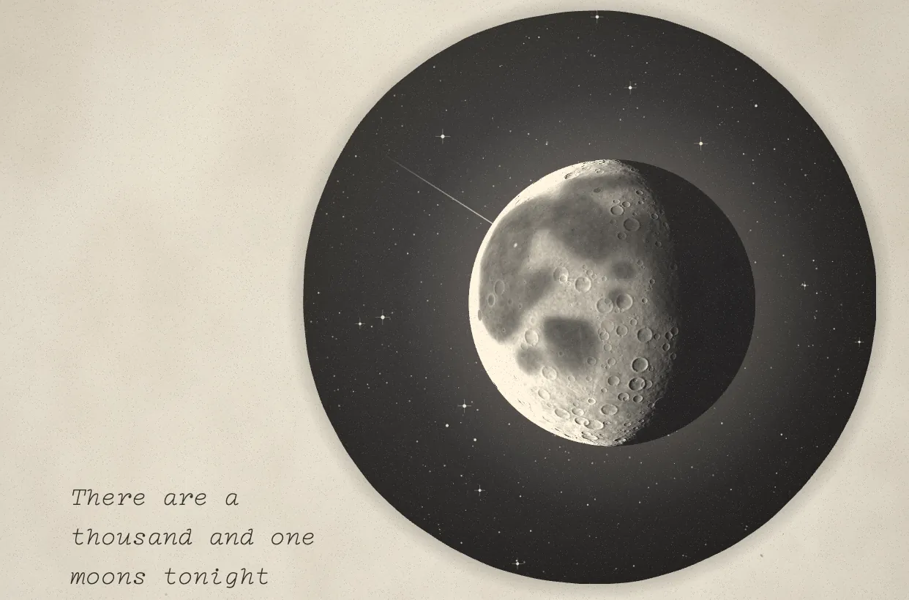

PROJECT NOTES / 2026.09
1001 States of the Moon
A Mid-Autumn short where a full stop tries fifteen ways to become the moon

It opens on a close-up of the moon. The camera pulls back, and back, until the moon turns out to be the full stop at the end of a sentence: There are a thousand and one moons tonight.
Then the full stop jumps out of the sentence, grows, and discovers it is hollow. It wants to be the moon. The next fifteen scenes are its fifteen attempts, and each ending becomes the material for the next: ink, geometry, dust, water, thread, pixels, a progress bar stuck forever at 99%, and Su Shi's Mid-Autumn poem, set in vertical lines and rearranged into a moon. At last it passes through a moon gate, becomes tonight's moon, and returns to the end of To be continued as a full stop.
I made it for Mid-Autumn night, 2026. The whole piece is one HTML file drawn on Canvas 2D, moving at 24 fps with a 12 fps hand-made jitter and paper grain on top. An original little waltz carries a single 16-bar theme from beginning to end, and the instruments change as the story does.